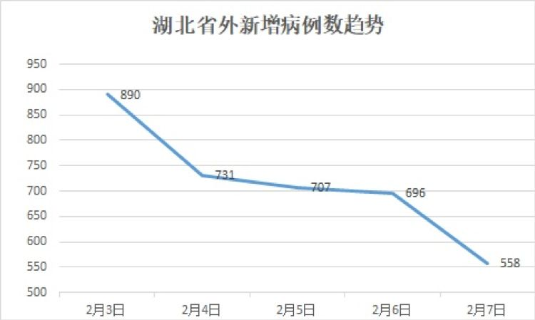
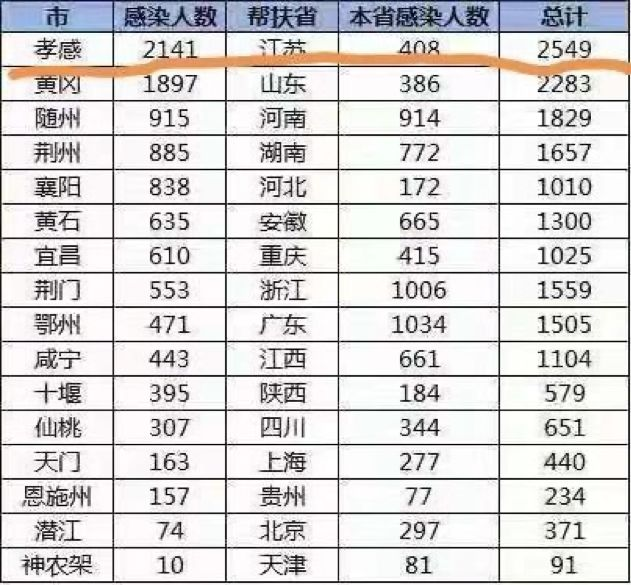
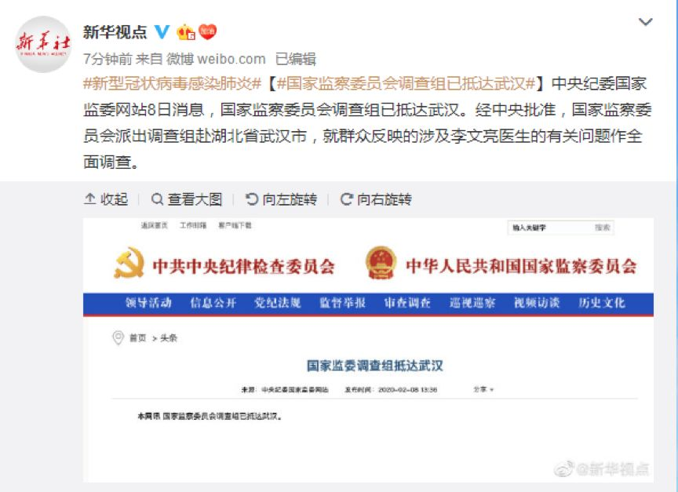

叶青武汉实录：“封城”17天，7个变化
原文链接 备份链接 从1月23日“封城”到元宵节，已经过去整整17天。即使我每天忙于记日记，也觉得时间过得很快啊。 过去我要早起，6点起床，7点到办公室，不堵车。现在则是天天睡到自然醒，有点提前退休的感觉。虽然我还有两年上班的时间。 …
点击上方蓝字
_
关注我们
_

非常时期，武汉成了全国人民挂念、祈福的城市。封城后，武汉人民的真实生活是什么样？
正和岛自1月26日起特别推出《叶青：我在武汉疫区的第N天》专栏。叶青是一位定居武汉40年的市民，也是一名学者和官员。接下来的一段时间，他会用笔记录下亲身经历的、观察到的武汉，为此他还专门外出到大街上、到超市里，获得一手真实的信息。
这将是一份宝贵的史料。感谢他，我们得以更真切地感知到武汉疫情。让我们一起为武汉加油！
作者：叶青 中南财经政法大学教授、博导
湖北省统计局副局长 正和岛蓝色岛邻
来源：正和岛案例（ID：zhenghedaoanli）
01
湖北外病例连降四日
7日，正月十四。
7日，全国新增确诊病例3399例（湖北2841例），新增重症病例1280例（湖北1193例），新增死亡病例86例（湖北81例，黑龙江2例，北京、河南、甘肃各1例），新增疑似病例4214例（湖北2073例）。

截至7日，全国累计报告确诊病例31774例，累计死亡722例。

7日，湖北省新增病例2841例，其中：武汉市1985例、孝感市172例、黄冈市144例、鄂州市98例、襄阳市69例、黄石市68例、荆州市56例。
全省新增死亡81例，其中：武汉市67例、襄阳市2例、宜昌市1例、荆州市1例、荆门市1例、鄂州市2例、孝感市1例、黄冈市4例、咸宁市1例、潜江市1例。
截至7日，湖北省累计报告新型冠状病毒感染的肺炎病例24953例，其中：武汉市13603例、孝感市2313例、黄冈市2041例。
死亡699例，其中：武汉市545例、黄石市2例、襄阳市5例、宜昌市8例、荆州市11例、荆门市18例、鄂州市20例、孝感市26例、黄冈市36例、咸宁市2例、随州市9例、仙桃市5例、天门市10例、潜江市2例。
02
三个重要决定
今年很奇怪，一直没有响过春雷。但是，7日的三件大事，就像是三声惊雷。
决定一：一省帮助一市
截至2月6日，国家及各省市共派遣99支医疗队9277人支援武汉。其中56支医疗队5540人入驻各定点医院，4支解放军部队医疗队1400 人入驻火神山医院，39支医疗队2337人入驻三家方舱医院，另有9支医疗队1400人7日正在陆续抵达。
按照国家疫情联防联控工作机制综合组需求，民航局7日紧急组织协调国航、东航、南航、川航、山航、江西航等6家国内航司执行13架次民航包机任务，北京、上海、吉林、山东、四川、广东、陕西、江西、新疆9省区的18支医疗队近2000名医护人员7日晚前抵达武汉天河机场。
在此基础上，一省帮助湖北一市的模式启动。
国务院联防联控机制新闻发布会2月7日下午召开，宣布国家卫生健康委建立了16个省支援武汉以外地市的一一对口支援关系，以一省包一市的方式，全力支持湖北省加强病人的救治工作。
这是方式，继承了“援疆”“援藏”的优良传统，真正是“一方有难八方支援”。
6000万的湖北人，要以感恩之心记住这张表。

这是我非常关心的。
1月27日，我提了《一个省市区医疗队人与物援助湖北一个地级市的紧急建议》。建议如下：
目前，国家安排了大批的专家、物资到武汉。最新的数字是超过2000的医务人员，超过100万吨的各种物资。可以相信，这些数字每天都会增加。
但是，现在问题是，整个湖北但是疫区，武汉又是重疫区，湖北的地级市怎么办？
现在，湖北有近百家医院求援。除了武汉之外，大部分是地级市、县市的医院。
26日晚上，在湖北卫视的视频中看到，山东的医疗队已经到了黄冈市。
我建议，国务院能不能出台一个规定，让有条件的省市区派出医疗队固定支援一个地级市，包括人员与物资。就像当年四川地震，也是这种援助方式。
日本近日支援武汉一批口罩、防护服等，从日本空运到成都，再从成都经过公路运到武汉，就可以进入恩施后，沿路发一部分口罩等用品，免得重复运输。
这个建议，能够成为现实，我很高兴。
决定二：派调查组
2月7日中午1点，中央纪委国家监委消息：经中央批准，国家监察委员会决定派出调查组赴湖北省武汉市，就群众反映的涉及李文亮医生的有关问题作全面调查。
8日中午12点消息，国家监察委员会调查组已抵达武汉。

不管什么事情，主要是老百姓想问清楚的事情，就是很重要的事情，就要查清楚。
决定三：增加省委常委
当然，湖北省除了需要医疗方面的人财物之外，还需要加强领导力量。
7日深夜23点40分，不起眼的《中国妇女报》传来消息：两位要员要来湖北。
8日上午，各大媒体宣布《王贺胜同志任湖北省委委员、常委》。
王贺胜同志1961年6月生，1984年8月参加工作，天津医学院卫生系卫生专业大学本科毕业，南开大学马克思主义教育学院马克思主义理论与思想政治教育专业毕业，在职研究生学历，法学博士，教授，博士生导师。
关键是他自2018年3月任国家卫生健康委员会副主任、党组成员，从1月23日起就在武汉抗疫第一线。这也是对他的考验。
懂医的省委常委终于来了。我的一个小目标：各级领导层要有懂医的副省长、副市长、副县长，哪怕是人大副主任，政协副主席也好。各级政府要成立健康顾问组。不能只有招商顾问。
03
雷神山医院
2月6日，雷神山医院正式通过武汉市城建和卫健部门的验收，并开始逐步移交。武汉雷神山医院位于江夏区黄家湖，占地面积约328亩，建筑面积7.99万平方米。雷神山医院正式使用后，将可提供1600张床位。整体参照战地医院形式，采用模块化设计，主要包括医疗用房区、医护保障区、医疗辅助区。
原来我认为雷神山医院还会由军队医疗队接手。看来不是。
胡绍担任雷神山医院院长。胡绍先后担任武汉市中心医院副院长、武汉市普爱医院院长、武汉市中医医院院长等职务，并曾入选全国优秀医院院长。
雷神山医院首支医疗队共110余人，由省肿瘤医院和武汉市第一医院骨干力量组成。医技人员则由三级医院选派，共同承担雷神山医院医疗救治任务。
测温用上了人工智能。
“您好，我是狮南社区的家庭体温监测小助手。下面请您用普通话回答我的问题：请问您家里有发热病人吗？”洪山区狮子山街狮南社区开始借助AI技术手段，对辖区居民体温情况实行“初筛”，大大提高了监测居民体温的效率。
AI智能语音系统由浙江某科技公司免费提供，安徽某话务公司操作执行，如果接通率达到100%，1.5小时可拨打1万通电话，效率很高。
居民接听以后，就会有温柔的女音提示“通话将被录音，请如实回答问题”。接下来，接听者将被问及“是否在本小区”“家有几口人”“是否有发热病人”“是否与新冠肺炎病人有过接触”等。在回答完4个问题后，AI系统还会温馨提示要“少出门、戴口罩、勤洗手，有发热病人及时上报”。
该社区除了使用AI人工智能电话初筛外，还通过微信小程序线上统计、各小区出入口设置固定体温计等多种方式，实时监测居民体温。针对初筛后的发热居民，该社区还将通过人工筛查的方式再进行确认。
在外的武汉工作的人也该回来了。7日，武汉市长专线微信公众号对外公布了《武汉市防控新型冠状病毒感染肺炎疫情期间在外人员返汉工作实施方案》。
方案要求，优先安排医疗防疫机构、防疫药品、用品、药械等生产经营单位，保障城市公共事业运行必需，群众生活必需，经批准的重大工程以及重要国计民生相关企业等方面从业人员返回。
同时要求，强化过程管控，返回人员应当是没有发热、干咳、气喘等症状的身体健康人员。返回后必须做好为期14天的健康监测。
方案中，对外公布了《在外人员返汉申请表》。
04
给“张继先们”“李文亮们”一个上报通道
遇到疫情应该怎么上报。网民分为两派意见：张继先派与李文亮派。
我在1月29日提了一个《建立医务人员及时报告可能疫情线索的建议》。内容如下：
我们常说，“春江水暖鸭先知”。其实，医生对疫情的反映是最敏感的。
中国青年报·冰点周刊发表文章：《钟南山发话前，武汉这位医生向附近学校发出疫情警报》，说的是武汉市第五医院消化内科吕小红主任。
她在2019年12月25日就听说有医护人员疑似感染；
2020年1月2日，她建议本院设立发热门诊；
1月6日起，她所在的医院接到了很多疑似病例；
1月20日，她给附近高中的校长发去短信，让给原计划补课的高三学生放假。
……
她比钟南山院士更早提出隔离的建议。
如果按照她的建议行事，不会有这么麻烦的事情。
国家应该建立疑似传染疫情直通国务院疾控中心机制，接到报告直接由国家疾控中心派国家级专家组来研究确认，形成快速反应，中间环节太多误事，宁可接报后确定不是传染性的，也不能等到发生了传染再来定方案。
因此，我建议今后应该建立一种制度，让医务人员及时报告一些可能的疫情线索。
05
小结
三大决定，就是三个层面的推动力。也是“武汉保卫战”的新的关键性措施。
一个个的矛盾被发现，被解决，前进的速度会加快。
一个不一样的元宵节到来了。
静静的武汉。
静静的元宵节。
作者：叶青，1962年3月出生，第十、十一届全国人大代表、国务院新闻办专家库专家，曾任中国民主促进会湖北省委员会副主任委员（2000-2017）。他被网民称为“中国最具个性官员”、“车改第一人”，曾荣获2007年度人民网十大社会责任博客、南方周末2011年两会“十大言者”、《南风窗》2012年十大公益人物、2019政务微博十年·先锋等等。
原文链接 备份链接 从1月23日“封城”到元宵节，已经过去整整17天。即使我每天忙于记日记，也觉得时间过得很快啊。 过去我要早起，6点起床，7点到办公室，不堵车。现在则是天天睡到自然醒，有点提前退休的感觉。虽然我还有两年上班的时间。 …
原文链接 备份链接 非常时期，武汉成了全国人民挂念、祈福的城市。封城后，武汉人民的真实生活是什么样？ 正和岛自1月26日起特别推出《叶青：我在武汉疫区的第N天》专栏。叶青是一位定居武汉40年的市民，也是一名学者和官员。接下来的一段时间，他 …
原文链接 备份链接 数据来源：腾讯新冠肺炎疫情实时追踪 截至2月4日上午7时16分， 全国新型肺炎确诊个案超过19700例。 距离武汉封城，已经过去了11天。 普通人被困家中，医护人员依然奋战在一线…… 在抗 …
原文链接 备份链接 非常时期，武汉成了全国人民挂念、祈福的城市。封城后，武汉人民的真实生活是什么样？ 正和岛自1月26日起特别推出《叶青：我在武汉疫区的第N天》专栏。叶青是一位定居武汉40年的市民，也是一名学者和官员。接下来的一段时间，他 …
原文链接 备份链接 非常时期，武汉成了全国人民挂念、祈福的城市。封城后，武汉人民的真实生活是什么样？ 正和岛自1月26日起特别推出《叶青：我在武汉疫区的第N天》专栏。叶青是一位定居武汉40年的市民，也是一名学者和官员。接下来的一段时间，他 …